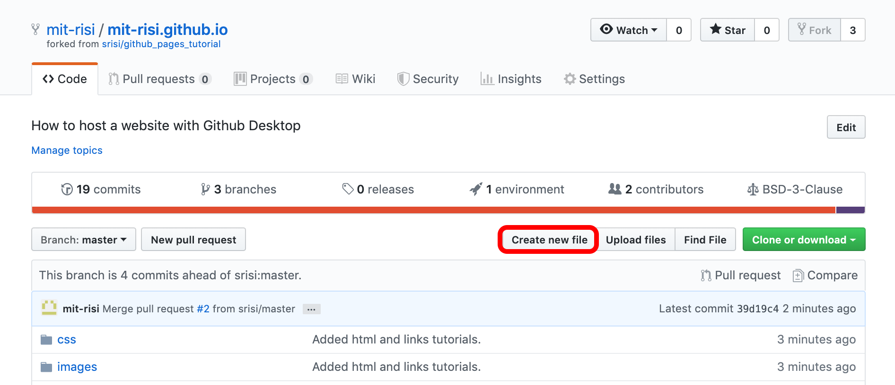
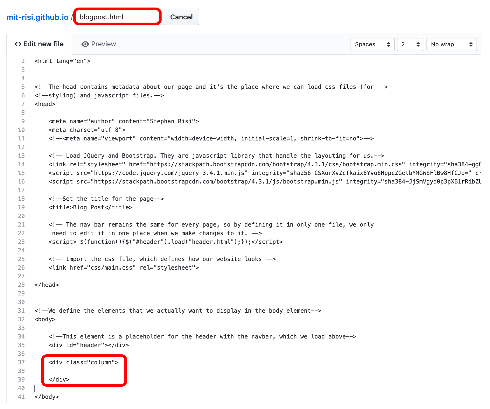
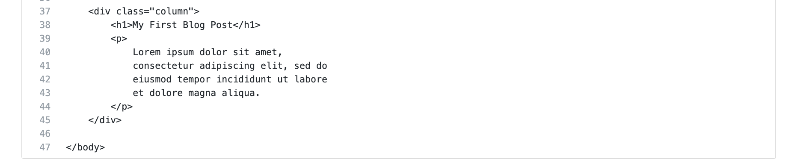
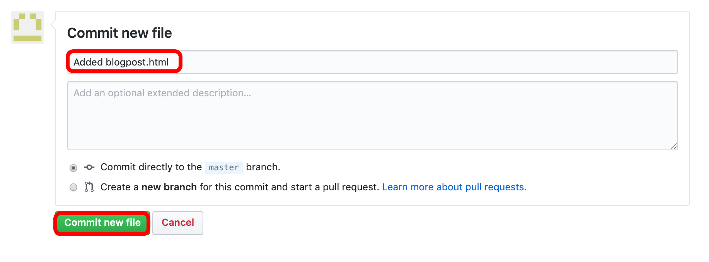
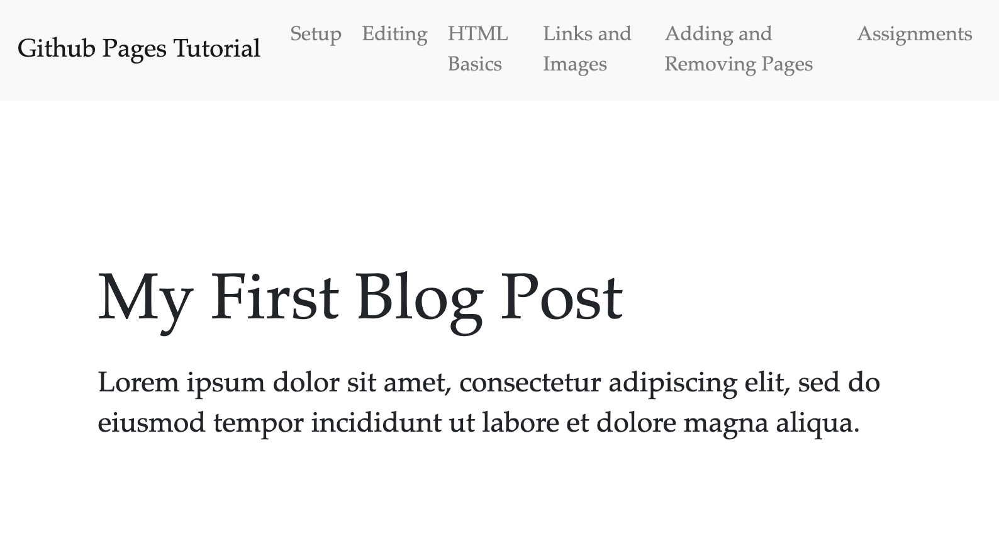
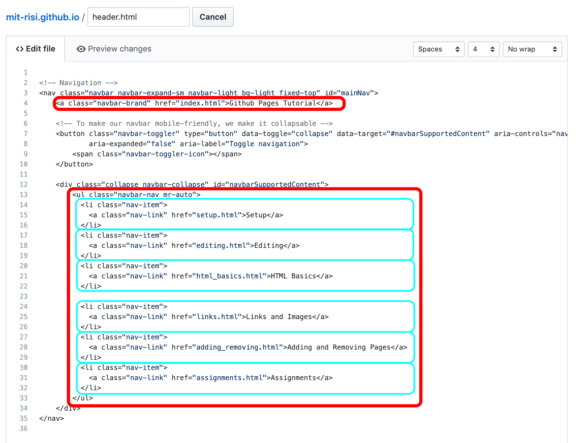
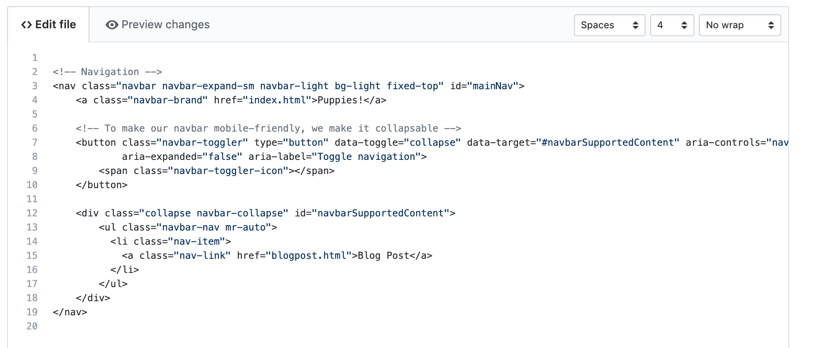
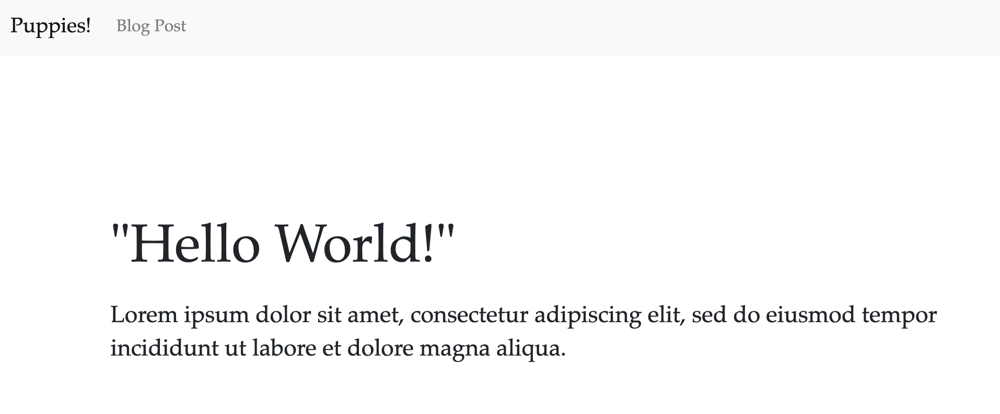
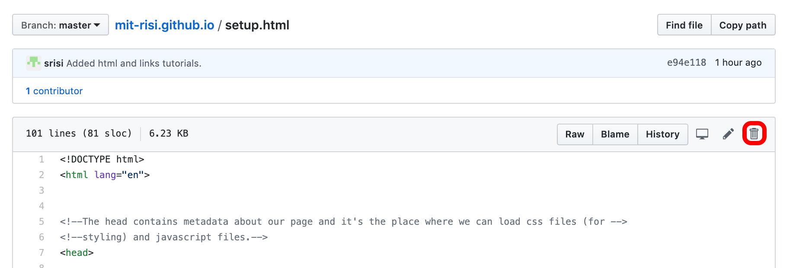

So far, we have only made changes to existing pages, specifically index.html. What if we want to add new pages? Or delete existing ones?
Let’s use the blog post template from the previous sections and display it on a new page, blogpost.html.
To do this, go to the github page of your repository (https://github.com/<username>/<username>.github.io) and click
“Create New File.”

Name the new file blogpost.html and copy all of the boilerplate code (i.e. everything except the content of the “column” div element) from index.html.

Next, fill in the contents of your blogpost.

Finally, we’re ready to save (“commit”) the changes. Add a short description and then click “Commit new file”.

If you now go to <username>.github.io/blogpost, you should be able to see your blogpost.

Right now, you can navigate to blogpost.html. But what we really want is to add the blogpost to the navigation bar at the top. We can do this by modifying the header.html file. header.html contains the html for the navbar and is automatically loaded on everyone of our pages.
As before, click on header.html in your repository and then click on the edit button in the top right as explained here.
header.html contains a lot of boilerplate, for example, to convert the navbar into a drop-down menu on small screen.
We only need to pay attention to two things: the project title and the individual navigation items in light-blue.

The second line,
<a class="navbar-brand" href="index.html">Github Pages Tutorial</a>, controls what gets displayed as the title of
your website in the left corner of the navbar. Change Github Pages Tutorial to something that describes the purpose of your
website. Let’s say Puppies!
Next, let’s change the items in the navbar. Each is defined by a “nav-item” <li> element.
To add a link to your blogpost, you can just add a new <li> element.
<li class="nav-item">
<a class="nav-link" href="blogpost.html">Blog Post</a>
</li>
While you’re at it, you can also delete the other elements from the navbar–you don’t want to display the links to the different sections of this tutorial on your website. (You can always find the original at https://srisi.github.io/github_pages_tutorial/ though.)
Voila, your new much shorter navbar.

You can now commit the changes. Once you reload your website, you should see your newly modified navbar with a working link to your blog post.

Strictly speaking, you don’t need to remove superfluous html files like setup.html. If they aren’t linked on your page, no one will likely look at them. But you can also just delete them by opening the file on Github, clicking on the trash button, and then committing the change.

When you're happy with your page setup, you can move on to the final section: how to style your webpage with CSS.